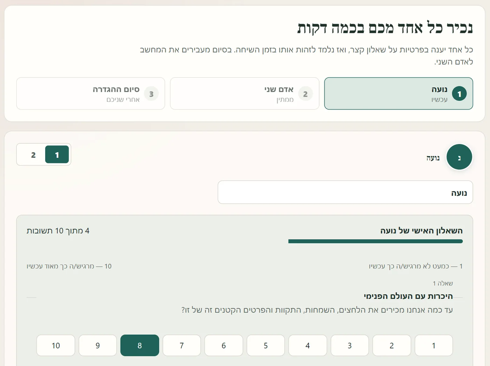
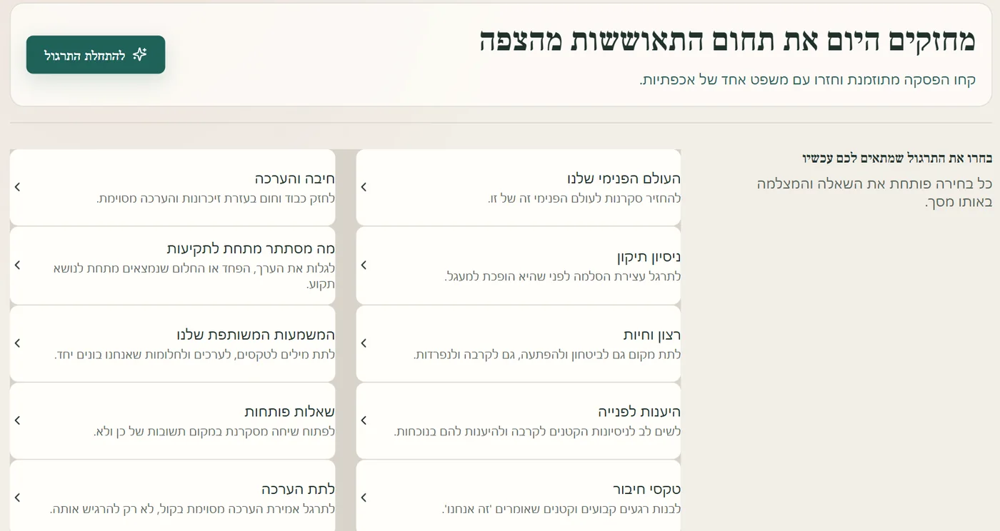
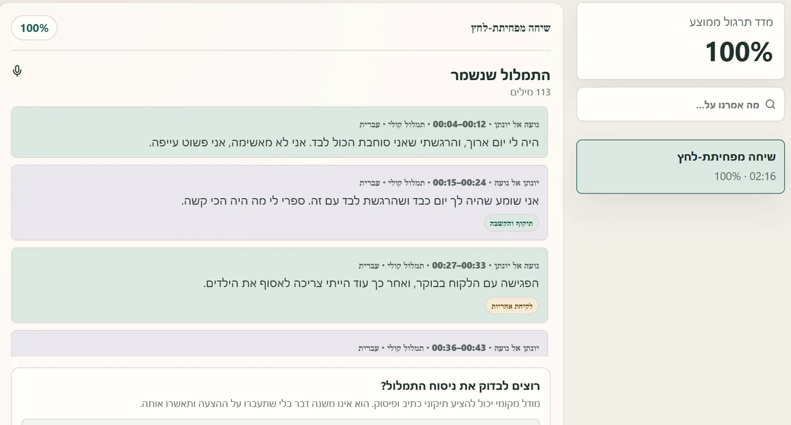
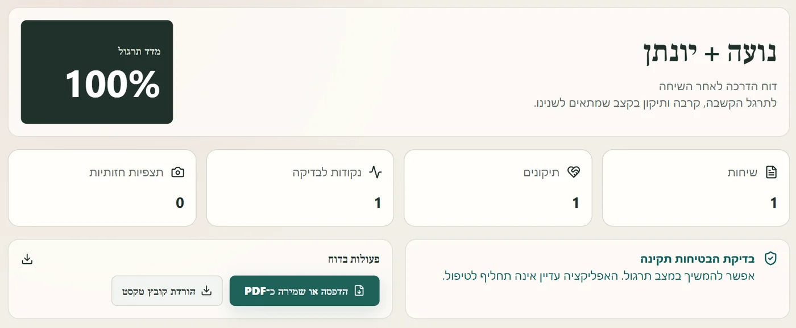
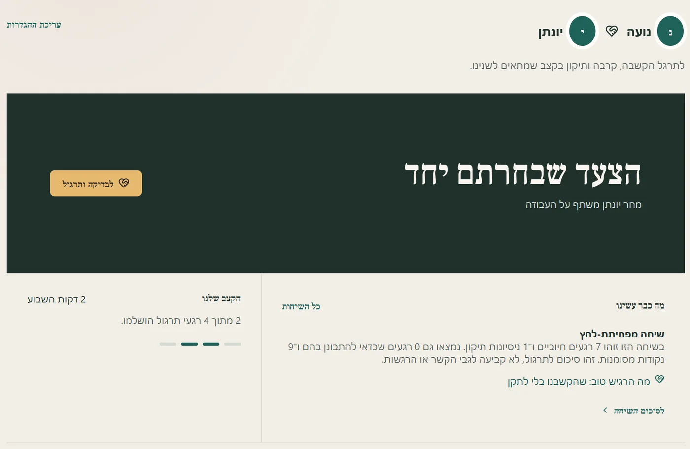

רגע שקט לשיחה טובה יותר ביניכם
שאלות שפותחות שיחה, שיחות מונחות לרגעים הקשים, וסיכום עדין בסוף. הכול נשאר על המחשב שלכם.
קובץ אחד, כ־175MB, בלי התקנה. אם Windows מציגה אזהרה, כך ממשיכים.
- בלי הרשמה
- בלי ענן
- ההקלטות רק אצלכם
מה שנאמר ביניכם, נשאר ביניכם
שיחה זוגית היא מהדברים הכי פרטיים שיש, ולכן Couple Lab עובדת כולה על המחשב שלכם. אין לנו שרת, כך שאין לנו שום דרך לראות או לשמוע מה נאמר.
בלי חשבון ובלי סיסמה
אין הרשמה, אין מייל ואין שם משתמש. פותחים את האפליקציה ומתחילים.
הכול נשמר על המחשב שלכם
ההקלטות, התמלולים והסיכומים נשמרים רק אצלכם, ולא עולים לשום מקום.
תמלול בלי אינטרנט
הפיכת הדיבור לטקסט נעשית במחשב עצמו. אפשר לנתק את האינטרנט, והכול ימשיך לעבוד.
זיהוי מי מדבר, בלי לשמור תמונות
אם תבחרו שהאפליקציה תלמד מי מדבר, הצילומים ודגימות הקול שמשמשים ללמידה נמחקים מיד. נשמר רק תיאור מספרי, מוצפן בהצפנה של Windows.
אתם מחליטים מה נמחק
אפשר למחוק את ההקלטה של כל שיחה (התמלול נשאר), או לפתוח פרופיל זוגי חדש ולהתחיל מאפס.
הסכמה של שניכם
אין הקלטה בלי ששניכם אישרתם. את שאלון מפת הקשר כל אחד ממלא לבד, והתשובות מוסתרות מבן או בת הזוג.
יש באפליקציה גם אפשרות לחבר ניתוח בענן, למי שרוצה. היא כבויה כברירת מחדל, ופועלת רק אם תפעילו אותה ותזינו מפתח API משלכם.
מה יש בפנים
כלים קטנים ופשוטים שעוזרים לדבר, להקשיב ולהתקרב.
17 חפיסות שאלות
שאלות שפותחות שיחה אמיתית: על העולם הפנימי, על הערכה, על תשוקה, ועל החלומות שלכם יחד.
שיחות מונחות לרגעים קשים
"אחרי ריב" ו"שיחה מפחיתת לחץ" מחולקות לשלבים. האפליקציה מנהלת את התורות ושואלת כל אחד מכם איך הוא מרגיש לפני השיחה ואחריה.
הקלטה ותמלול
אם שניכם מסכימים, השיחה מוקלטת ומתומללת על המחשב. התמלול בעברית בסיסי, אבל מספיק כדי לחפש אחר כך "מה אמרנו על...".
סיכום וצעד אחד להמשך
מי דיבר כמה, אילו רגעים טובים היו, וצעד קטן לשבוע הקרוב. אפשר לשמור כ־PDF.
הפסקה כשמוצפים
כפתור אחד עוצר את השיחה ל־20 דקות ומזכיר לחזור. כי שיחה טובה לא קורית כשהלב דוהר.
מפת הקשר
עשר שאלות שכל אחד מכם עונה עליהן לבד. יחד הן מראות איפה אתם חזקים ובמה כדאי להתמקד עכשיו.
על מה זה מבוסס
התרגילים בנויים בהשראת עקרונות מוכרים מעולם הטיפול הזוגי, בעיקר מהמחקר של ג'ון וג'ולי גוטמן על מה שעוזר לזוגות להישאר קרובים.
פתיחה רכה
להתחיל ממה שאני מרגיש וממה שאני צריך, במקום מביקורת.
דובר ומקשיב
אחד מדבר, והשני משקף את מה ששמע לפני שהוא עונה.
ניסיונות תיקון
לשים לב לרגעים הקטנים שעוצרים הסלמה, ולהיענות להם.
הפסקה מוסכמת
כשמישהו מוצף, עוצרים ל־20 דקות לפחות, נרגעים וחוזרים.
היענות לפנייה
לשים לב לבקשות הקטנות לקרבה במהלך היום, ולהיענות להן.
היכרות מתמשכת
לשאול שאלות פתוחות, גם אחרי שנים יחד, ולגלות מה השתנה.
Couple Lab אינה קשורה למכון גוטמן ואינה מחליפה טיפול זוגי.
למי זה מתאים
לא צריך שתהיה בעיה כדי להתחיל. זוגות שמתרגלים כשטוב, מתמודדים טוב יותר כשקשה.
- לזוגות שרוצים זמן קבוע לדבר באמת, לא רק על לוגיסטיקה.
- אחרי ריב, כשלא ברור איך מתחילים לדבר שוב.
- למי שבטיפול זוגי ורוצה לתרגל בבית בין הפגישות.
- לזוגות ותיקים שרוצים להכיר זה את זה מחדש.
חשוב לדעת: Couple Lab היא כלי לתרגול, לא טיפול ולא אבחון. יש בה בדיקת בטיחות קצרה. אם מסמנים בה פחד, איומים או אלימות, היא ממליצה לפנות לאיש מקצוע לפני שממשיכים לתרגל.
איך זה עובד
מתחילים בהיכרות קצרה, פעם אחת. אחר כך, עשר עד עשרים דקות, פעם בשבוע או מתי שצריך.
כל אחד ממלא שאלון, לבד
בפעם הראשונה כל אחד מכם עונה בפרטיות על עשר שאלות קצרות: עד כמה אתם מכירים זה את עולמו של זה, ביטחון רגשי, מחלוקת, אינטימיות, חלוקת הבית ועוד. זה לוקח כמה דקות.
בסיום מעבירים את המחשב לשני, והתשובות נשארות מוסתרות. משתי התשובות נבנית מפת הקשר שלכם, ולפיה האפליקציה מציעה במה כדאי להתמקד.


בוחרים על מה לדבר
שאלה אחת מתוך חפיסה, או שיחה מונחית כשיש משהו ספציפי. האפליקציה גם מציעה במה כדאי להתמקד היום, לפי מפת הקשר שלכם.


מדברים, ואם בחרתם, היא מתמללת
אחד מדבר, השני מקשיב ומשקף. אם הפעלתם הקלטה, האפליקציה מתמללת ומסמנת רגעים כמו הקשבה, הערכה או לקיחת אחריות.
ואם צריך לעצור, עוצרים.


מסכמים בעדינות
בסוף רואים מה עבד ומה כדאי לנסות בפעם הבאה, ובוחרים יחד צעד קטן אחד. בלי שיפוט ובלי הכרעה מי צודק. המדד שמופיע הוא מדד תרגול, לא ציון לקשר.


חוזרים, ורואים התקדמות
במסך הבית מחכים לכם הצעד שבחרתם, השיחות הקודמות והקצב השבועי שלכם. כך התרגול הופך להרגל.


הורדה והפעלה בשתי דקות
אין אשף התקנה. זה קובץ אחד: פותחים ומתחילים.
- מורידים את הקובץ
Couple-Lab-Windows.exeמהכפתור. - פותחים אותו בלחיצה כפולה. אפשר לשמור אותו בכל תיקייה, למשל על שולחן העבודה.
- אם מופיעה ההודעה "Windows protected your PC", לוחצים על More info ואז על Run anyway. ההודעה מופיעה כי הקובץ לא חתום דיגיטלית. זו אזהרה כללית של Windows לכל קובץ לא חתום, ולא סימן שמשהו לא בסדר.
- מאשרים מיקרופון (ומצלמה, אם תרצו). אם תבחרו, האפליקציה לומדת להכיר את הקול והפנים של כל אחד מכם. אפשר גם לדלג. מכאן מתחילים שיחה ראשונה.
מה צריך
- מחשב עם Windows 10 או 11
- מיקרופון, ואם רוצים גם מצלמה (המובנים במחשב נייד מספיקים)
- כ־175MB להורדה
שאלות נפוצות
צריך חיבור לאינטרנט?
רק כדי להוריד את הקובץ. אחרי זה הכול עובד גם בלי חיבור.
כמה זה עולה?
כלום. האפליקציה חינמית, בלי פרסומות ובלי מנוי.
מישהו יכול לראות את השיחות שלנו?
לא. השיחות נשמרות רק על המחשב שלכם. מי שיכול לפתוח אותן הוא מי שיש לו גישה למחשב הזה, לכן כדאי לנעול אותו בסיסמה.
זה מחליף טיפול זוגי?
לא. זה כלי לתרגול בבית. הוא לא שופט מי צודק ולא קובע מה מישהו מרגיש. הוא יכול להשתלב יפה עם טיפול, אבל לא להחליף אותו.
מה אם יש אצלנו פחד או אלימות?
Couple Lab לא מתאימה למצב כזה. בבדיקת הבטיחות הקצרה, סימון של פחד, איומים או אלימות מוביל להמלצה לפנות לאיש מקצוע לפני כל תרגול.
יש גרסה למק או לטלפון?
כרגע רק ל־Windows.
התמלול לא מדויק מספיק. אפשר לשפר?
התמלול המובנה קטן ומהיר, ובעברית הוא בסיסי. מי שמותקן אצלו Ollama יכול להפעיל מודל מקומי שמציע תיקוני כתיב ופיסוק, ואתם מאשרים כל תיקון. מי שמרגיש בנוח עם שורת פקודה יכול להריץ גרסה עם מנוע עברית מדויק יותר, לפי ההוראות כאן.
עשר דקות יחד יכולות לשנות שבוע
הורידו, שבו יחד, ובחרו שאלה ראשונה.
הורדה חינם ל־WindowsWindows 10/11 · כ־175MB · אם מופיעה אזהרה, כך ממשיכים.